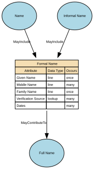

Formal Name
Formal Name represents the official, legally recognised version of an individual’s name, as recorded by an authoritative source such as a civil registry, passport, birth certificate, or government-issued identity document. It is the canonical name used in contexts requiring legal identity, compliance, or formal verification.
Implements Concepts from Person Domain, Concept Model
| Concept | Description |
|---|---|
| Formal Name | Formal Name represents the official, legally recognised version of an individual’s name, as recorded by an authoritative source such as a civil registry, passport, birth certificate, or government-issued identity document. It is the canonical name used in contexts requiring legal identity, compliance, or formal verification. |

Attributes
| Attribute | Description | Data type | Occurs |
|---|---|---|---|
| Given Name | Given Name is the primary personal name(s) assigned to an individual, typically at birth or legal registration, and used to identify the person within family, social, and formal contexts. It represents the individual’s personal identifier within their full name structure and appears as the first name in many Western naming conventions, but may represent one or more names depending on cultural naming patterns. This may exist in multiple forms (legal, preferred, informal), depending on the name sub‑domain. | line | once |
| Middle Name | Middle Name refers to any personal name component that appears between the Given Name and the Family Name in an individual’s full name structure. It may consist of one or more name elements, and may serve cultural, familial, religious, or administrative purposes. It is a core structural name attribute, but not always used in every naming tradition. Middle Names may appear in legal/formal contexts or as optional identity components depending on the jurisdiction. | line | many |
| Family Name | Family Name (also known as surname, last name, or patronymic/matronymic element depending on culture) is the inherited or legally recorded component of a person’s name that identifies their family, lineage, or household grouping. It is a core identifier used across legal, administrative, and social systems and is typically stable across life except where changed through legal processes. Family Name forms one of the principal anchors of identity and is part of the official full name in most naming systems worldwide. | line | once |
| Verification Source | Verification Source for Name identifies the authoritative channel, document, registry, or method used to confirm the accuracy of a person’s name—whether legal, preferred, or alias—depending on the name sub‑domain. It records where the verification originated, not the document itself. It underpins trust, traceability, and compliance for name‑related identity management. | lookup | many |
| Dates | Dates for When a Name Is in Use describe the time period during which a specific name record is valid, active, or recognised by the organisation or by legal/authoritative sources. They provide temporal boundaries for each name entry, enabling accurate historical reconstruction, identity auditing, and compliance with legal name‑change processes. This typically consists of two attributes: * effective_from — when the name began being valid or used * effective_to — when the name ceased to be valid or used (nullable if still active) These dates apply to each name record, not to the person. | structure | many |